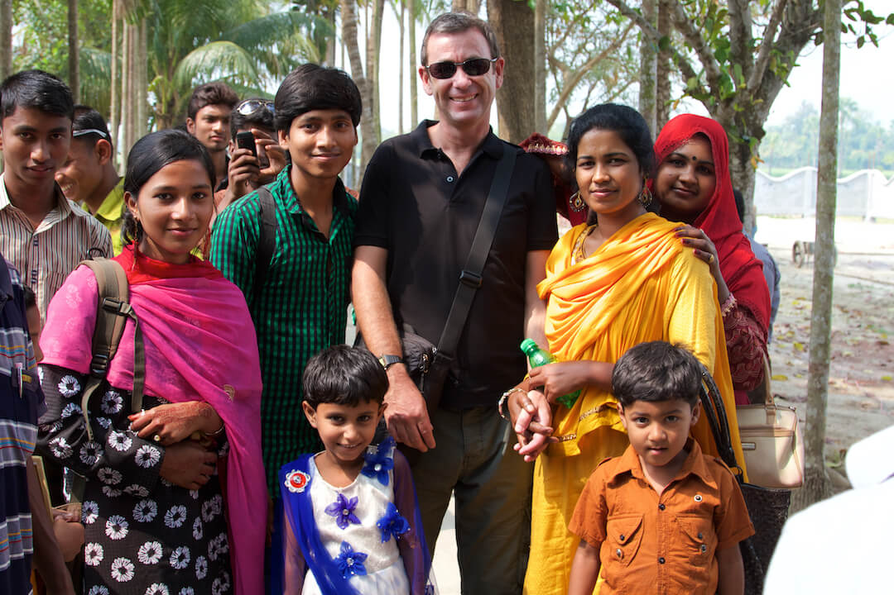

<...>
Badache Oana - Blog
<...>
<...>
Welcome to Badache Oana - Blog
<...>
<....>Home
<...>About
<...>
<...>
<...>
<...>
<...>
A Tranquil Afternoon in Harmonyville
<...>By Oana Badache, Posted on 06.03.2024
<...>On a serene afternoon in Harmonyville, I found solace in the quiet charm of a local bookstore. Among the shelves, I discovered a delightful book titled "Happy Roadhog's Journey of Joy."
As I immersed myself in its pages, the story unfolded with tales of simple pleasures, unexpected friendships, and the magic of savoring life's little moments. Each word seemed to paint a tranquil landscape of peace and contentment.
Finishing the book, I left the bookstore with a heart full of gratitude, carrying the peaceful spirit of Happy Roadhog with me. The sun set gracefully, casting a warm glow on the cobblestone streets, and I strolled away with a serene smile, appreciating the beauty of simplicity that had brightened my day.
Today i found out bagels exist
<...>By Oana Badache, Posted on 07.03.2024
<...>In the charming town of Harmonyville, I stumbled upon a cozy café and, to my surprise, discovered the joy of bagels. Unfamiliar with these doughy delights, I took a bite and was instantly captivated by the warmth and simplicity of the experience.
Cream cheese spread smoothly over the toasted surface, creating a moment of unexpected delight in the heart of my small-town adventure. Sometimes, it's the simplest discoveries, like a newfound love for bagels, that bring unexpected joy to our everyday lives. Bagels had become my delightful surprise in the peaceful haven of Harmonyville.
I adopted a dog
<...>By Oana Badache, Posted on 08.03.2024
<...>One sunny afternoon in the local park, I crossed paths with a friendly dog. His caramel and white fur exuded warmth as he approached, eyes brimming with curiosity and affection. With a few joyful barks and wagging tail, our connection was instant.
Realizing he was a stray without a collar, I decided to bring him into my life. From that day forward, his boundless energy and unconditional love filled my home with immeasurable joy. Our journey together became a heartwarming chapter, a tale of paws, smiles, and the beautiful simplicity of adopting a furry friend.
I named the dog bagel
<...>By Oana Badache, Posted on 09.03.2024
<...>I also enrolled in the army. Instead of heading to college, I stumbled into a recruitment center and found myself accidentally enrolling in the army. Surrounded by disciplined recruits, I navigated the challenges of boot camp, adapting to the unexpected turn my life had taken.
Despite the initial confusion, the rigors of military training forged unexpected bonds. Drill sergeants barked orders, obstacle courses tested limits, and amidst it all, a camaraderie emerged. In this unplanned adventure, I discovered resilience and purpose, proving that sometimes, the most remarkable journeys begin with a simple wrong turn.
I have been deployed to Bangladesh
<...>By Oana Badache, Posted on 11.03.2024

<...> Dhaka's hustle and bustle greeted me as I joined forces with local troops, tackling humanitarian challenges and fostering community connections.
Navigating the lush landscapes, each day brought fresh experiences, from aiding in disaster relief to immersing myself in Bangladeshi life. Amid challenges, camaraderie flourished, and the unexpected deployment became a lively adventure of personal growth and cultural understanding.
The vibrant tapestry of Bangladesh, woven with resilience and warmth, turned an accidental enlistment into a lively and transformative journey, proving that life's surprises can lead to the most unforgettable chapters.
<...>
© 2024 Badache Oana - Blog